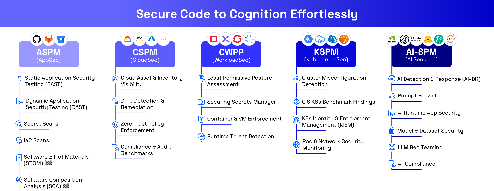
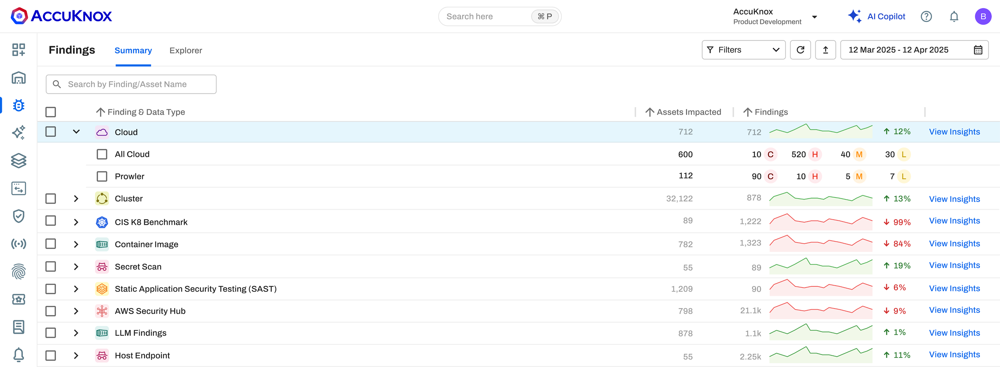
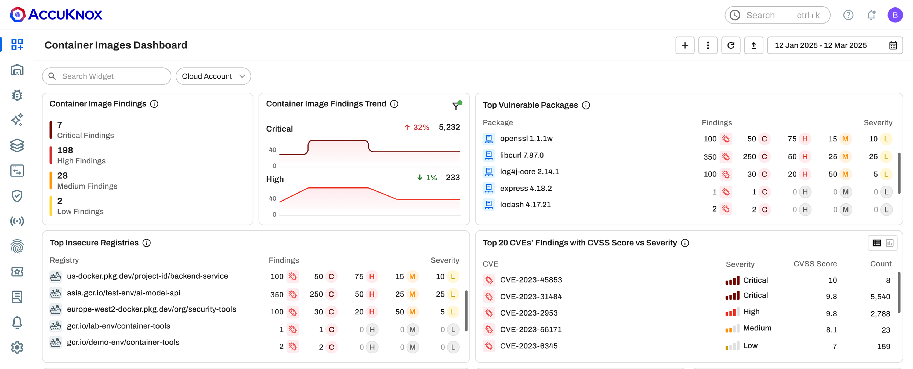
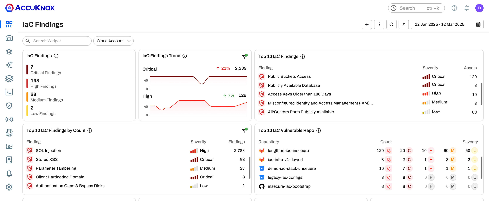
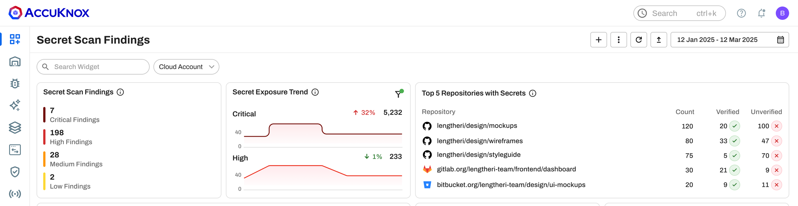
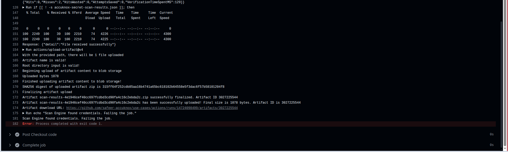
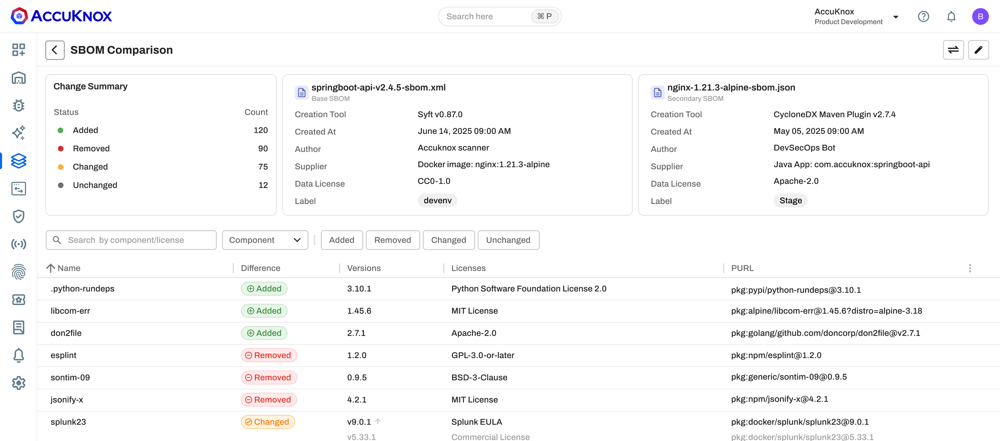
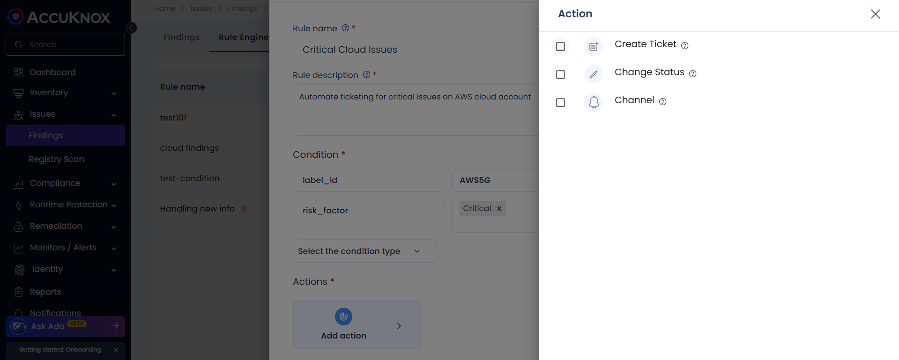

ASPM best practices cheat sheet
Fix the flaws
attackers can
really reach
Seven do's and don'ts for application security posture management, from the first commit to the closed ticket.
Seven do's and don'ts for application security posture management, from the first commit to the closed ticket.
Each year brings more published CVEs, more leaked keys and more findings from more scanners. Fix times are getting longer, so the gap between what you found and what you closed keeps growing.
New secrets found in public GitHub commits in 2025, up 34% in one year.
Median time to fully fix a CISA KEV vulnerability in 2025, up from 32 days. Only 26% were fully fixed.
Sources: Datadog, State of DevSecOps 2026, datadoghq.com. Verizon 2026 DBIR, verizon.com. GitGuardian, State of Secrets Sprawl 2026, gitguardian.com.
AccuKnox ASPM runs SAST, DAST, SCA, IaC, secret and container scans, and keeps the findings in the same CNAPP as your cloud and runtime data.

ASPM inside the AccuKnox CNAPP. help.accuknox.com/how-to/aspm-overview
Findings from SAST, DAST, SCA, IaC, secret and container scans land in Issues, Findings, next to cloud and cluster data.

Findings summary by data type. help.accuknox.com/use-cases/aspm
The ASPM Scanner CLI runs IaC, SAST, SonarQube SAST, secret, container and DAST scans with one command and uploads the results. Install the ASPM Scanner CLI
CVSS rates how bad a flaw is. EPSS estimates the chance of exploitation in the next 30 days.

Container Images dashboard. help.accuknox.com/use-cases/epss-scoring
The AccuKnox Vulnerability Database adds EPSS to container image findings. Runtime Verified uses KubeArmor eBPF telemetry with CISA KEV and EPSS enrichment. Read the Vulnerability DB page
A public S3 bucket in Terraform costs one review comment. The same bucket in production costs an incident.

IaC Findings dashboard. help.accuknox.com/how-to/code-source-onboarding
The AccuKnox app asks for read only access and needs no pipeline change. CI/CD and CLI integrations run the same scanners. Connect your source code
A key in Git history stays usable until someone revokes it, even after the file changes.

Secret Scan Findings dashboard. help.accuknox.com/use-cases/secret-scan-cicd-aws
Each finding shows the secret type, file path, commit SHA and author. AccuKnox receives the finding details, never the secret value. Add secret scanning to CI/CD
A gate that breaks every build on day one gets switched off by day three.

A secret scan failing the job in GitHub Actions. help.accuknox.com/use-cases/secret-scan-cicd-aws
AccuKnox scan steps take a soft or hard fail setting. KnoxGuard blocks deployments that pull images from untrusted registries. Set up KnoxGuard
When the next Log4Shell lands, an SBOM shows which releases ship the package.

SBOM Comparison. help.accuknox.com/getting-started/xbom-setup
AccuKnox scans each SBOM for vulnerabilities, license issues and dependency risk, and tracks changes between versions. Read the SBOM FAQ
A finding with no ticket and no owner waits in the backlog until an attacker finds it.

Rule Engine with a Create Ticket action. help.accuknox.com/use-cases/rules-engine-ticket-creation
A finding moves from Active to Waiting for Verification to Fixed once two scans agree, and the linked ticket closes with it. Create your first rule
Read each row. Where the statement is true for your team, start the first step this week.
| If this is true | AccuKnox capability | First step |
|---|---|---|
| Each scanner has its own console and nobody sees the total | ASPM findings and reports | Upload results with the ASPM Scanner CLI and schedule an ASPM report |
| The team fixes CVEs in CVSS order | EPSS and Runtime Verified | Sort container findings by EPSS and turn on runtime verification |
| Some repos get no SAST, SCA or IaC scan | App Based code source scanning | Install the AccuKnox app and tick Auto connect new repos |
| Keys can reach the repo without a check | Secret scanning in CI/CD | Add the secret scan step with fail set to true |
| Builds pass whatever the scans find | Soft and hard fail gates, KnoxGuard | Start in soft fail, then set a hard fail date |
| Nobody can say which releases ship a given package | SBOM generation and comparison | Generate an SBOM in CI for each build |
| Findings wait with no owner or ticket | Rule Engine smart tickets | Connect Jira and create a rule with a Parent field |
Bring your gap check to a demo. We connect a repo, run the scans and rank the findings with you.
Book a demo Open the ASPM docsKuppingerCole CNAPP Leadership Compass features AccuKnox, citing DevSecOps and unified risk correlation.
Emerging Tech techscape profiles AccuKnox among startups joining cloud and application security.
Scan types in one ASPM Scanner CLI, from IaC and SAST to secrets, containers and DAST.
Sources: accuknox.com/analyst-recognition and help.accuknox.com/use-cases/aspm-scanner-cli